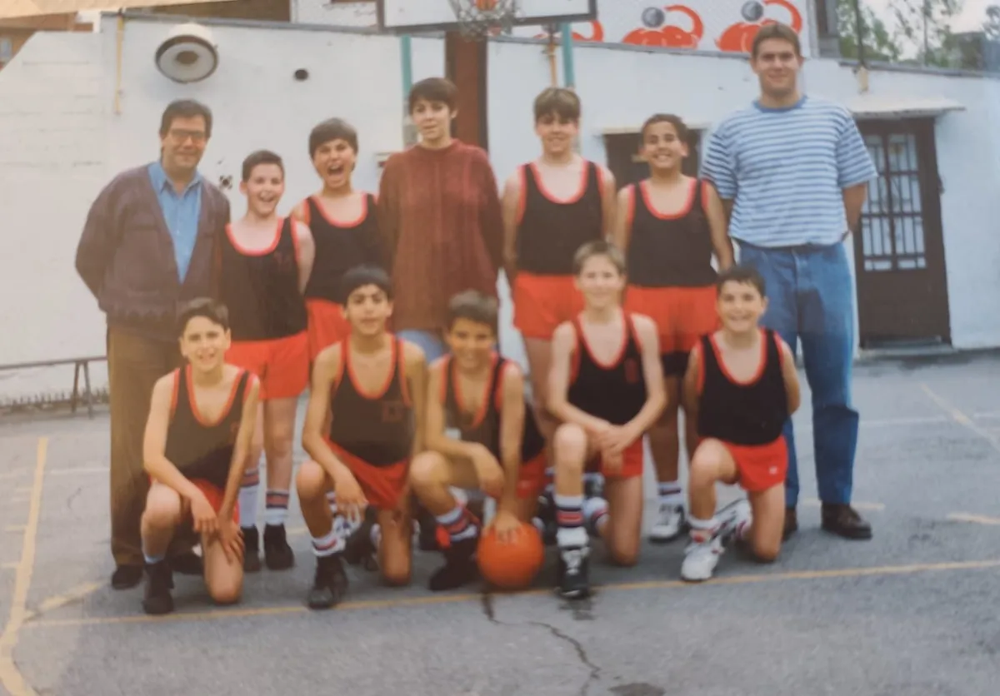
I cap d’ells ho sabia als sis anys.
Y ninguno lo sabía a los seis años.
Un entrenador de la Lliga Femenina Endesa i una capitana de la mateixa lliga. Un jugador d’ACB. Un campió de la Tercera FEB. Quatre del Barça. Tots van tenir la primera llicència aquí, i cap d’ells ho recorda com un tràmit: ho recorden com una pista de pati i un senyor que els va ensenyar a botar.
I no són només aquests deu. En són molts més: desenes de jugadors i jugadores formats en aquesta pista al llarg de seixanta anys. Aquí n’hem triat uns quants per donar a conèixer gent especial per al club, però la llista real no cabria en una pàgina.
Un entrenador de la Liga Femenina Endesa y una capitana de la misma liga. Un jugador de ACB. Un campeón de la Tercera FEB. Cuatro del Barça. Todos tuvieron su primera licencia aquí, y ninguno lo recuerda como un trámite: lo recuerdan como una pista de patio y un señor que les enseñó a botar.
Y no son solo estos diez. Son muchos más: decenas de jugadores y jugadoras formados en esta pista a lo largo de sesenta años. Aquí hemos elegido a unos cuantos para dar a conocer a gente especial para el club, pero la lista real no cabría en una página.
Sense compromís i sense pagar res. El teu fill o filla entrena amb nosaltres un dia, coneix els entrenadors i la resta de la colla, i després decidiu. Així va començar tothom qui surt en aquesta pàgina.
Sin compromiso y sin pagar nada. Tu hijo o hija entrena con nosotros un día, conoce a los entrenadores y al resto del grupo, y después decidís. Así empezaron todos los que salen en esta página.
No hi havia parquet. No hi havia grada. Hi havia una cistella clavada a la paret, un terra de ciment i onze nens amb samarreta negra i pantaló vermell.
No había parqué. No había grada. Había una canasta clavada en la pared, un suelo de cemento y once niños con camiseta negra y pantalón rojo.
El club i l’Escoleta van néixer l’any 1965. A l’esquerra de la foto, amb ulleres i jersei, hi ha en Julio Torralba, fundador del club i entrenador de referència durant dècades. Avui, seixanta anys després, continua a la pista cada setmana amb els nens i nenes de 4 a 8 anys de l’Escoleta.
El club y la Escoleta nacieron en 1965. A la izquierda de la foto, con gafas y jersey, está Julio Torralba, fundador del club y entrenador de referencia durante décadas. Hoy, sesenta años después, sigue en la pista cada semana con los niños y niñas de 4 a 8 años de la Escoleta.
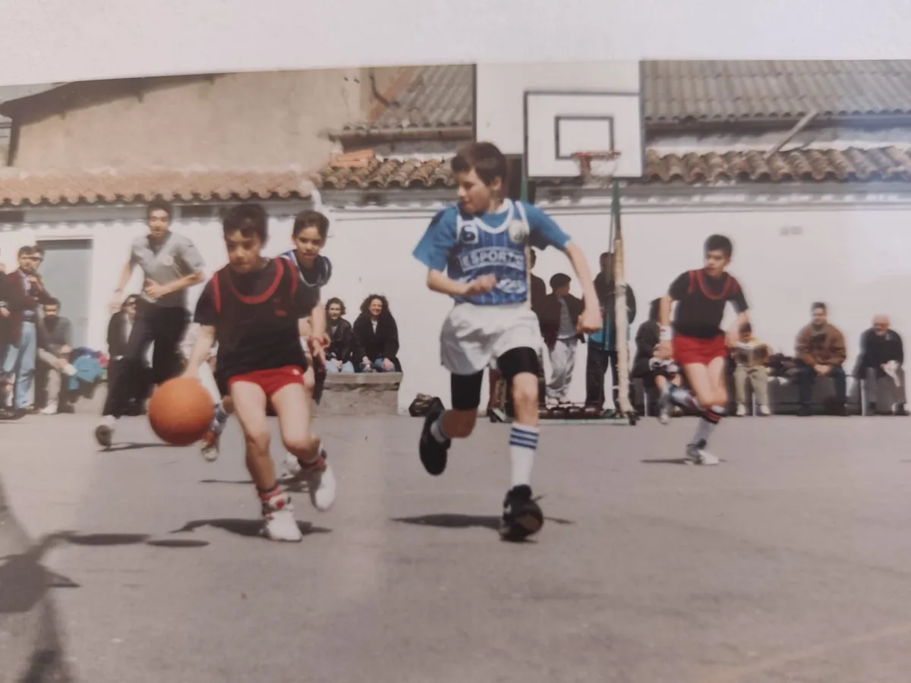
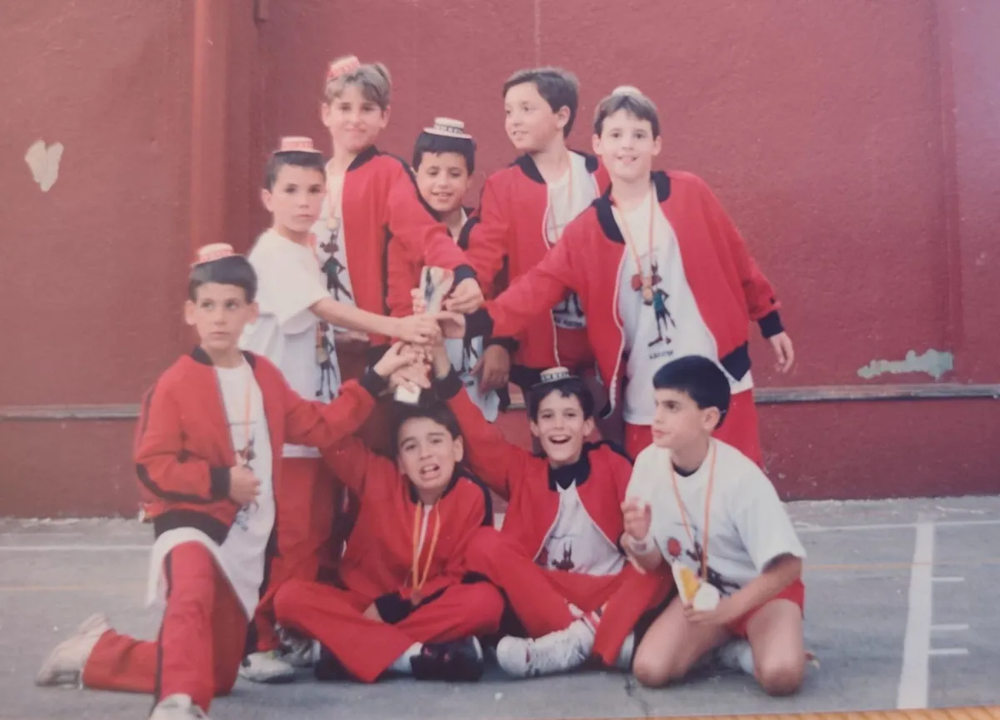
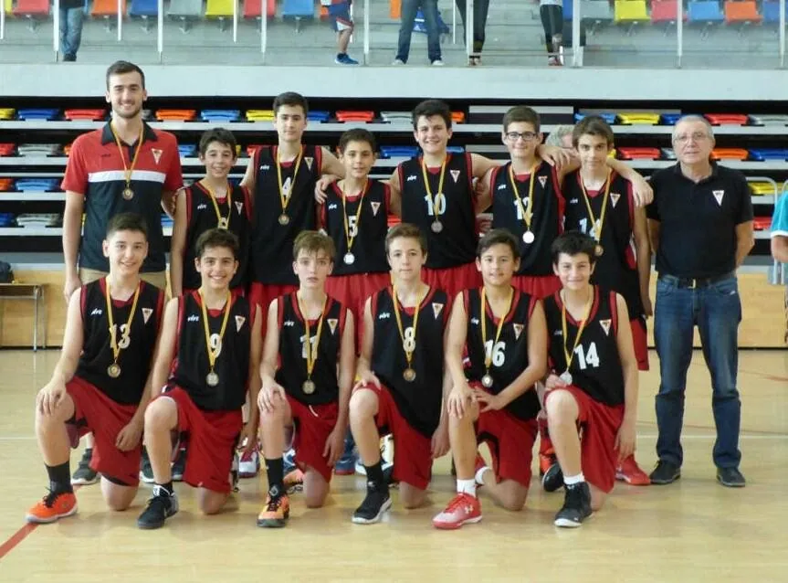
Temporada 1993-94. Campionat Mini Masculí Nivell A. Un nen d’onze anys tramita la seva primera llicència federativa.
Temporada 1993-94. Campeonato Mini Masculino Nivel A. Un niño de once años tramita su primera licencia federativa.
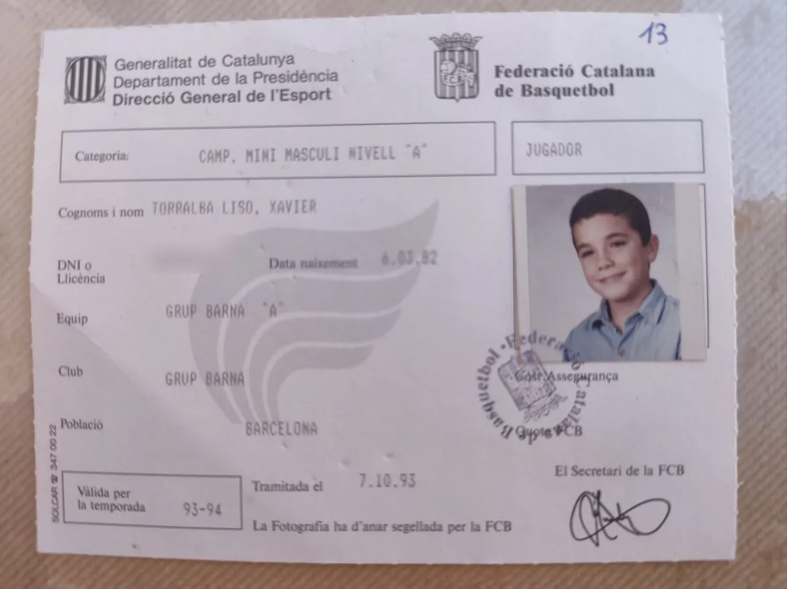
Aquell nen és avui Javier Torralba, entrenador del Valencia Basket Femení. Abans va dirigir el Segle XXI, un dels principals centres de formació del bàsquet femení espanyol, i ha treballat amb les categories inferiors de la selecció espanyola.
Ese niño es hoy Javier Torralba, entrenador del Valencia Basket Femenino. Antes dirigió el Segle XXI, uno de los principales centros de formación del baloncesto femenino español, y ha trabajado con las categorías inferiores de la selección española.
Quan va ser presentat a València va dir que se sentia «molt identificat amb la formació i el creixement de les jugadores joves». No és una frase de circumstàncies. És el que va veure a casa: el seu pare, en Julio, encara ho fa cada dimarts.
Cuando fue presentado en Valencia dijo que se sentía «muy identificado con la formación y el crecimiento de las jugadoras jóvenes». No es una frase de circunstancias. Es lo que vio en casa: su padre, Julio, todavía lo hace cada martes.
Cap escoleta pot prometre que un nen arribi a l’elit. El que sí pot demostrar el Barna és que d’aquí n’han sortit.
Ninguna escuela puede prometer que un niño llegue a la élite. Lo que sí puede demostrar el Barna es que de aquí han salido.
Aquesta és la foto de la seva primera llicència, temporada 93-94. Va dirigir el Segle XXI i ha treballat amb la selecció espanyola de formació. Avui entrena a la màxima categoria del bàsquet femení espanyol.
Esta es la foto de su primera licencia, temporada 93-94. Dirigió el Segle XXI y ha trabajado con la selección española de formación. Hoy entrena en la máxima categoría del baloncesto femenino español.
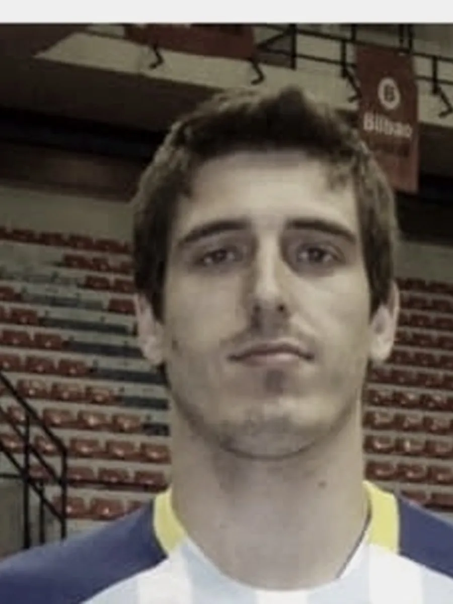
Barcelona, 1982. Pivot de 2,02 m i la mateixa quinta que en Javier: surten a la mateixa foto d’equip. Va debutar a l’ACB amb el Caprabo Lleida el 2003 i va fer tota la carrera a la LEB — Tarragona, Breogán, Lleida, Valladolid, Cáceres, Andorra, Palència, Burgos i Palma. El 2018 era el novè jugador amb més partits de la història de la LEB Or.
Barcelona, 1982. Pívot de 2,02 m y la misma quinta que Javier: salen en la misma foto de equipo. Debutó en ACB con el Caprabo Lleida en 2003 e hizo toda su carrera en la LEB — Tarragona, Breogán, Lleida, Valladolid, Cáceres, Andorra, Palencia, Burgos y Palma. En 2018 era el noveno jugador con más partidos de la historia de la LEB Oro.
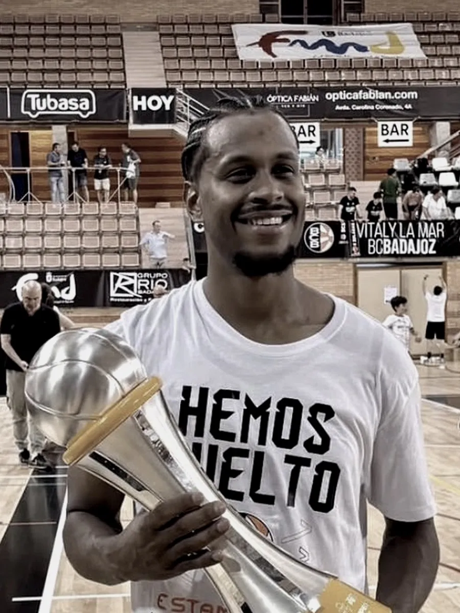
Àngel David Mejía Beriguete. Base, 1,79 m, nascut l’abril del 2000. Va entrar a l’Escoleta amb 4 anys. Ha passat per Villarrobledo, Martinenc, Santfeliuenc i La Roda; el juny de 2026 va pujar a Segona FEB amb el Badajoz i el primer que va fer va ser retrobar-se amb en Julio.
Ángel David Mejía Beriguete. Base, 1,79 m, nacido en abril de 2000. Entró en la Escoleta con 4 años. Ha pasado por Villarrobledo, Martinenc, Santfeliuenc y La Roda; en junio de 2026 ascendió a Segunda FEB con el Badajoz y lo primero que hizo fue reencontrarse con Julio.
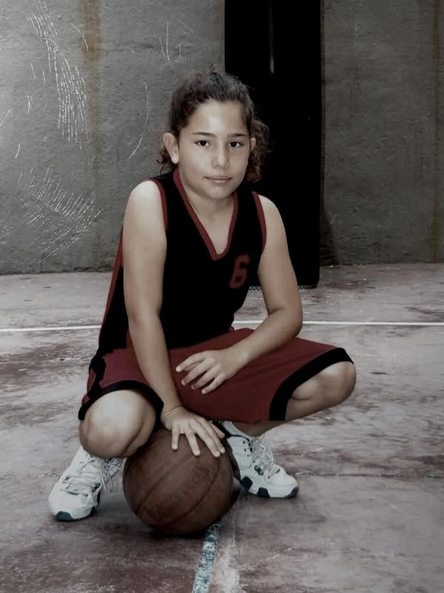
Barcelona, 1997. Escorta d’1,82 m i capitana de l’Spar Girona a la Lliga Femenina Endesa. Va començar a jugar aquí i es va formar al CB Femení Sant Adrià. Va debutar a l’elit el 2016-17 amb l’Uni Girona; després, Quesos El Pastor, Ensino i el Barça CBS, amb qui va pujar a Lliga Femenina. El 2023-24 va tornar a Fontajau.
Barcelona, 1997. Escolta de 1,82 m y capitana del Spar Girona en la Liga Femenina Endesa. Empezó a jugar aquí y se formó en el CB Femenino Sant Adrià. Debutó en la élite en 2016-17 con el Uni Girona; después, Quesos El Pastor, Ensino y el Barça CBS, con quien ascendió a Liga Femenina. En 2023-24 volvió a Fontajau.
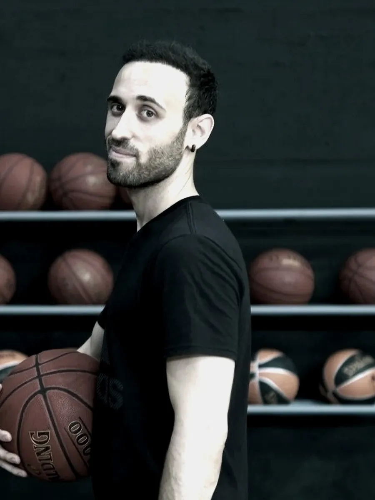
Una de les veus més seguides del bàsquet formatiu en castellà. Dirigeix la DCA Academy, acadèmia de tecnificació a les Franqueses del Vallès, amb acadèmia en línia i campus a Girona i Tarragona. Ha entrenat jugadors com Marc Gasol, Thomas Heurtel i Anna Cruz, ha acompanyat més de mil famílies i ha escrit un llibre sobre el que hi ha més enllà del resultat.
Una de las voces más seguidas del baloncesto formativo en castellano. Dirige la DCA Academy, academia de tecnificación en Les Franqueses del Vallès, con academia online y campus en Girona y Tarragona. Ha entrenado a jugadores como Marc Gasol, Thomas Heurtel y Anna Cruz, ha acompañado a más de mil familias y ha escrito un libro sobre lo que hay más allá del resultado.
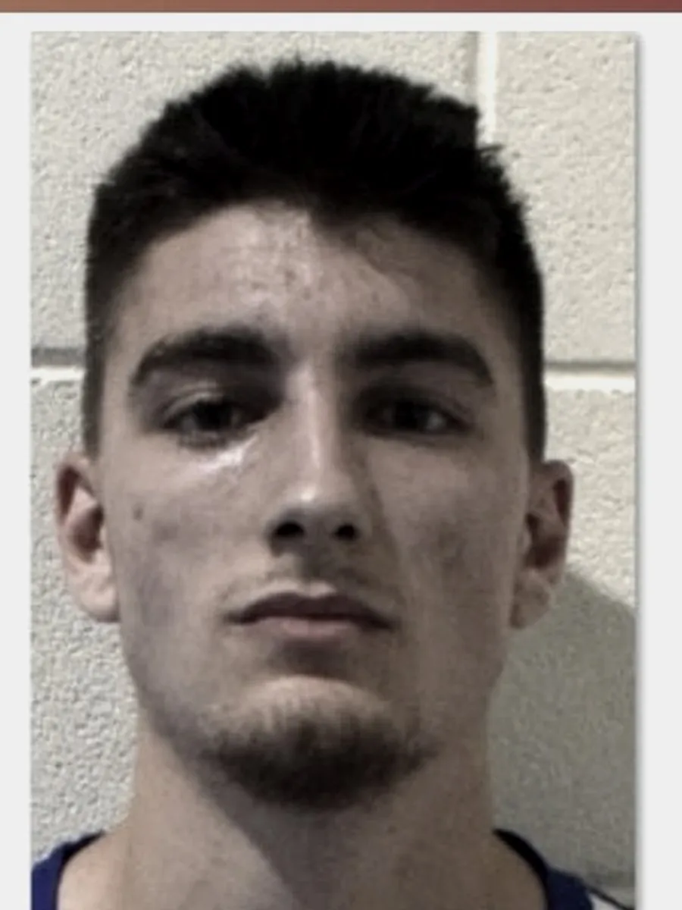
Neix el 2005. Va passar per aquesta pista abans de vestir de blaugrana: amb el Barça va jugar el Campionat d’Espanya de clubs i l’Eurolliga ANGT. Després, Lliga EBA amb el Castelldefels i Tercera FEB amb l’SD Espanyol, el Cuarte de Huerva i la UE Sant Cugat.
Nacido en 2005. Pasó por esta pista antes de vestir de blaugrana: con el Barça jugó el Campeonato de España de clubes y la Euroliga ANGT. Después, Liga EBA con el Castelldefels y Tercera FEB con el SD Espanyol, el Cuarte de Huerva y la UE Sant Cugat.
Nascut el 2009. De l’Escoleta a les categories de formació del Barça: hi va jugar el Campionat d’Espanya de clubs infantil. També ha passat per la selecció catalana. No en publiquem la imatge: encara és menor.
Nacido en 2009. De la Escoleta a las categorías de formación del Barça: allí jugó el Campeonato de España de clubes infantil. También ha pasado por la selección catalana. No publicamos su imagen: todavía es menor.
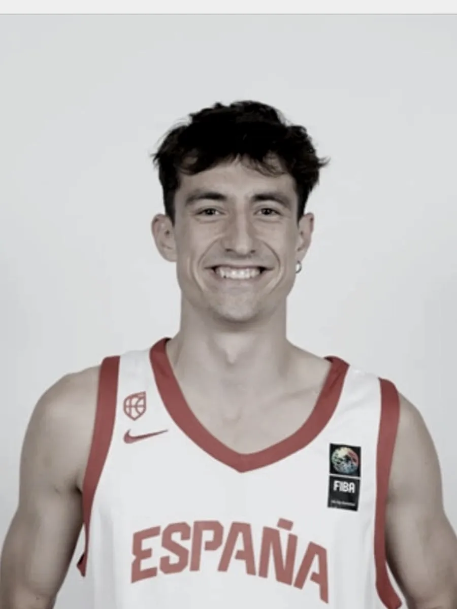
També va començar aquí. Avui competeix amb la samarreta d’Espanya al circuit 3x3.
También empezó aquí. Hoy compite con la camiseta de España en el circuito 3x3.
Bessons, nascuts el 2009. Van sortir de l’Escoleta i juguen a les categories de formació del Barça; en Marc és base-escorta i fa 1,85 m. No en publiquem la imatge: encara són menors i la seva carrera és seva.
Gemelos, nacidos en 2009. Salieron de la Escoleta y juegan en las categorías de formación del Barça; Marc es base-escolta y mide 1,85 m. No publicamos su imagen: todavía son menores y su carrera es suya.
L’Ainhoa López va començar a jugar aquí. Avui és capitana de l’Spar Girona i juga a la mateixa lliga que entrena en Javier Torralba.
La Ainhoa López empezó a jugar aquí. Hoy es capitana del Spar Girona y juega en la misma liga que entrena Javier Torralba.
Al pre-mini femení de la temporada 2004-05 tenia set anys. Onze anys després debutava a la màxima categoria del bàsquet femení espanyol.
En el pre-mini femenino de la temporada 2004-05 tenía siete años. Once años después debutaba en la máxima categoría del baloncesto femenino español.
La seva carrera, però, no s’explica només amb els partits. El febrer del 2022, jugant al Barça CBS, va anunciar que tenia un limfoma de Hodgkin, i el va superar. El setembre del 2024 va passar vint-i-cinc dies ingressada per una anèmia hemolítica greu i va necessitar dotze transfusions. Va tornar a la pista les dues vegades. Avui és ambaixadora de la donació de sang i porta una frase per bandera: «Viure és urgent».
Su carrera, sin embargo, no se explica solo con los partidos. En febrero de 2022, jugando en el Barça CBS, anunció que tenía un linfoma de Hodgkin, y lo superó. En septiembre de 2024 pasó veinticinco días ingresada por una anemia hemolítica grave y necesitó doce transfusiones. Volvió a la pista las dos veces. Hoy es embajadora de la donación de sangre y lleva una frase por bandera: «Viure és urgent».
És el nom que millor explica per què existeix una escoleta: perquè no saps qui tens al davant.
Es el nombre que mejor explica por qué existe una escoleta: porque no sabes a quién tienes delante.
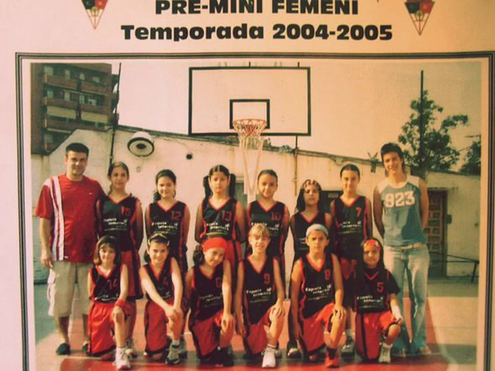
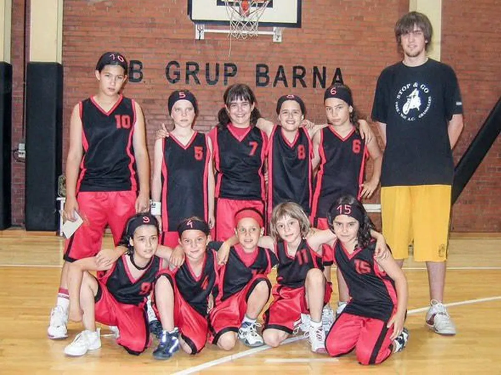
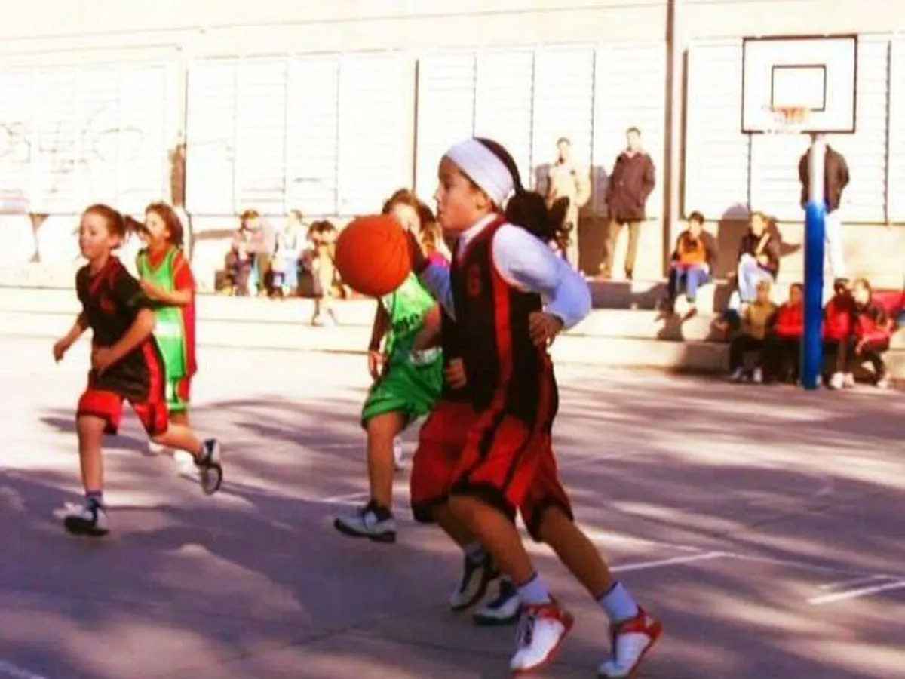
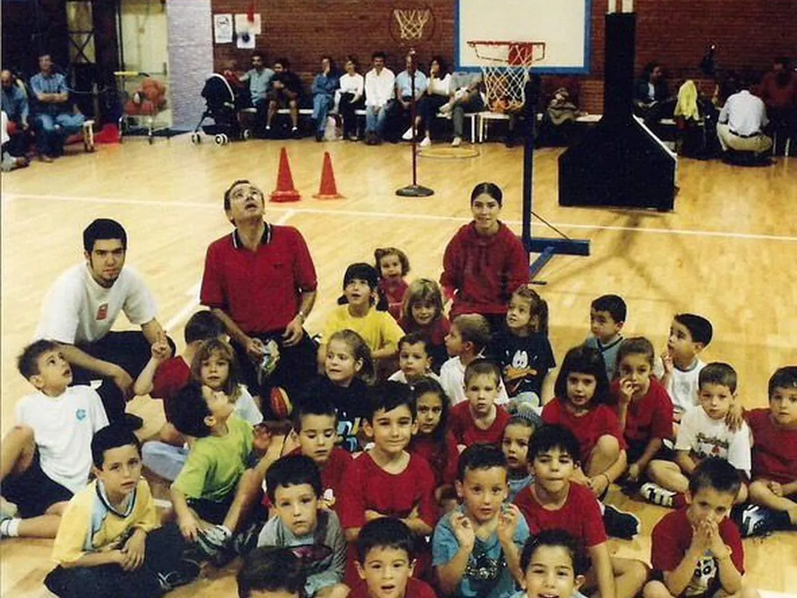
El febrer de 2007 un nen de sis anys es va fer una foto amb la mascota del club. El juny de 2026 el mateix noi aixecava un trofeu a Badajoz.
En febrero de 2007 un niño de seis años se hizo una foto con la mascota del club. En junio de 2026 el mismo chico levantaba un trofeo en Badajoz.
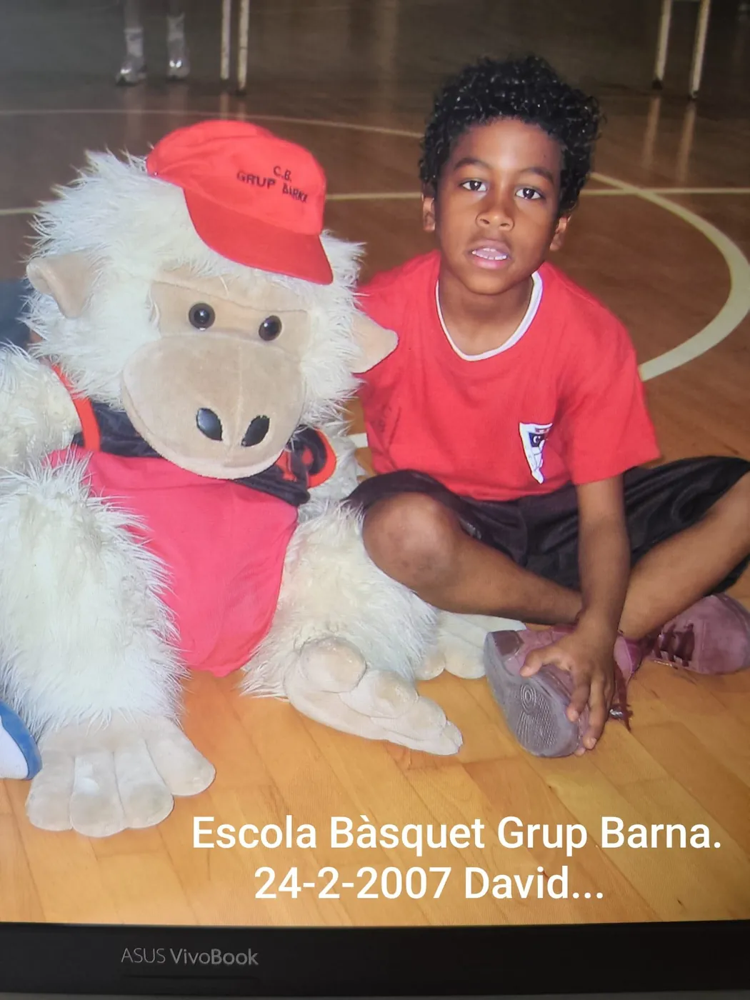
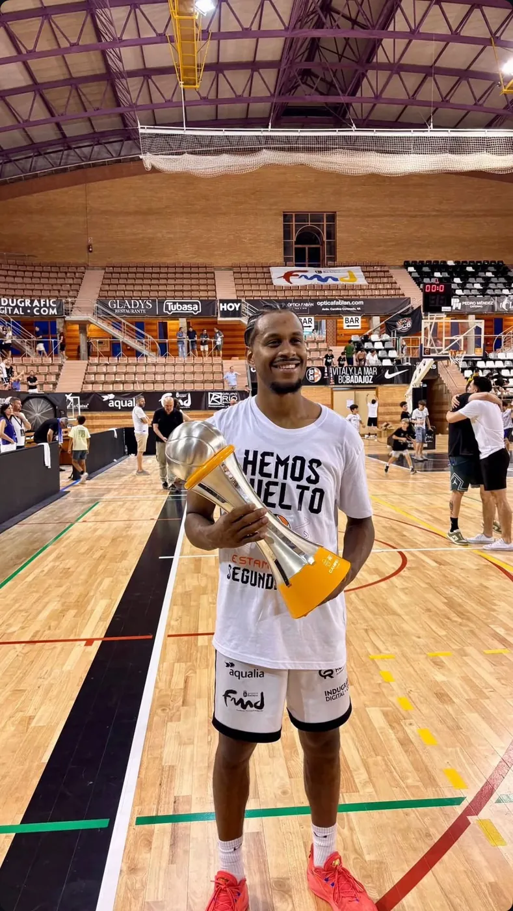
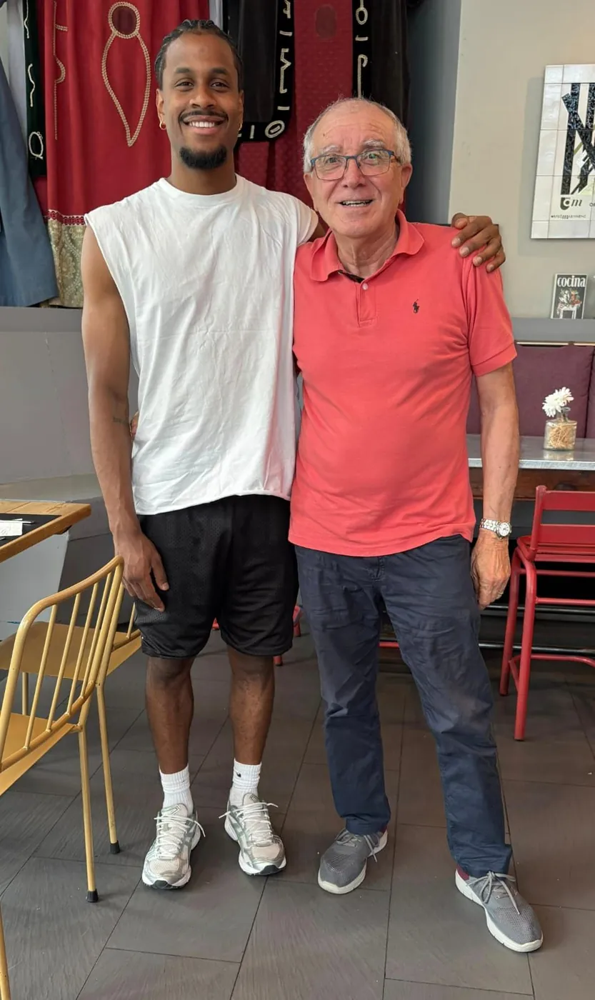
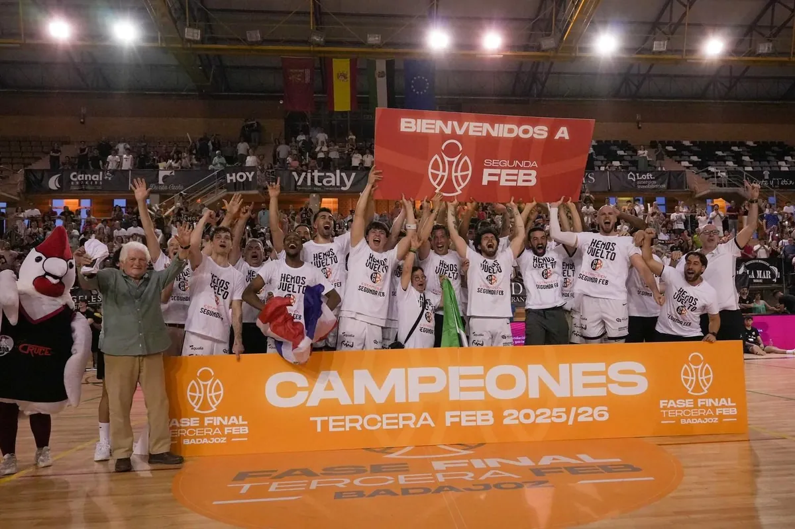
La Marta va entrar a l’Escoleta de petita. Aquest any n’ha fet divuit i marxa de casa. L’Escoleta la va acomiadar com s’acomiada la família.
Marta entró en la Escoleta de pequeña. Este año ha cumplido dieciocho y se va de casa. La Escoleta la despidió como se despide a la familia.
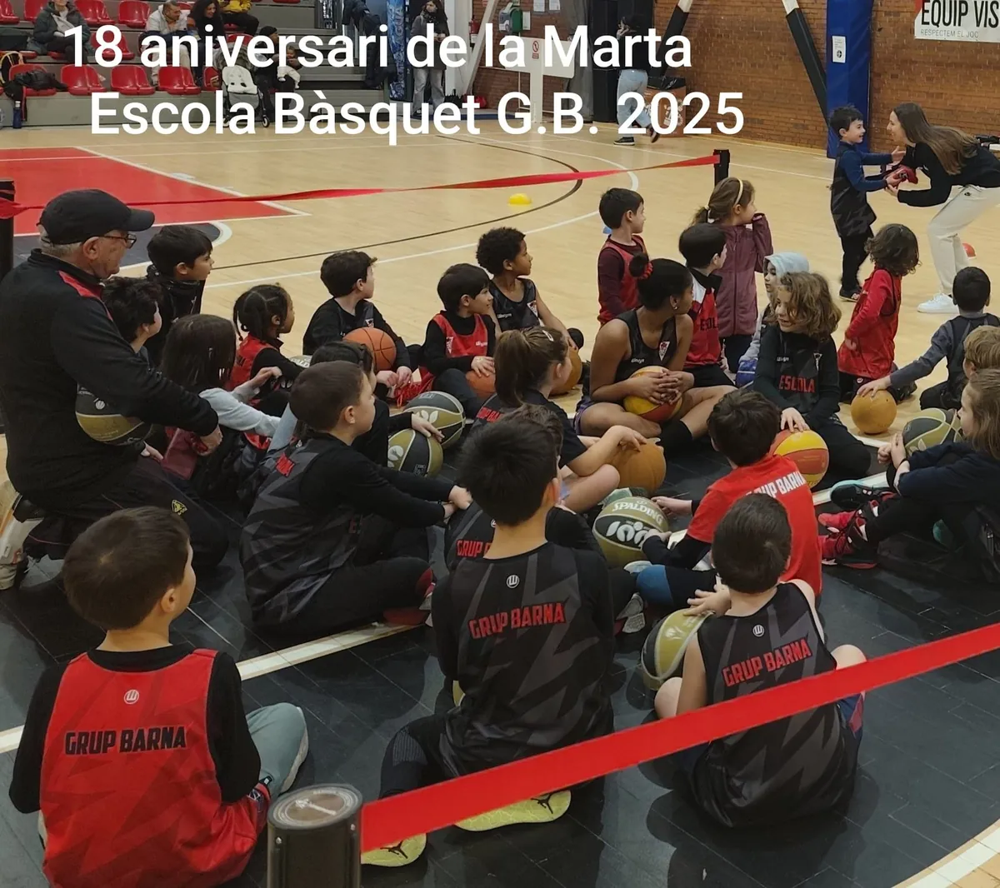
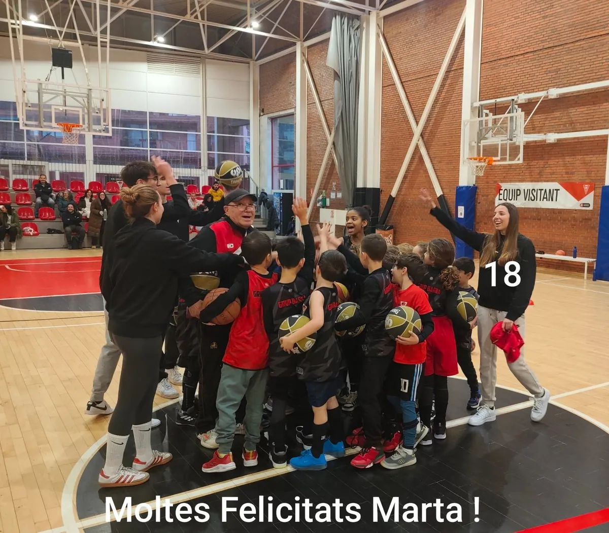
I al seu darrere ja en ve una altra promoció. Hi ha exjugadors de l’Escoleta jugant a les categories de formació del FC Barcelona i al circuit 3x3 de la selecció espanyola. Alguns encara són menors i per això no els posem cara ni nom aquí: la seva carrera és seva, no del nostre màrqueting.
Y detrás ya viene otra promoción. Hay exjugadores de la Escoleta jugando en las categorías de formación del FC Barcelona y en el circuito 3x3 de la selección española. Algunos todavía son menores y por eso no les ponemos cara ni nombre aquí: su carrera es suya, no de nuestro marketing.
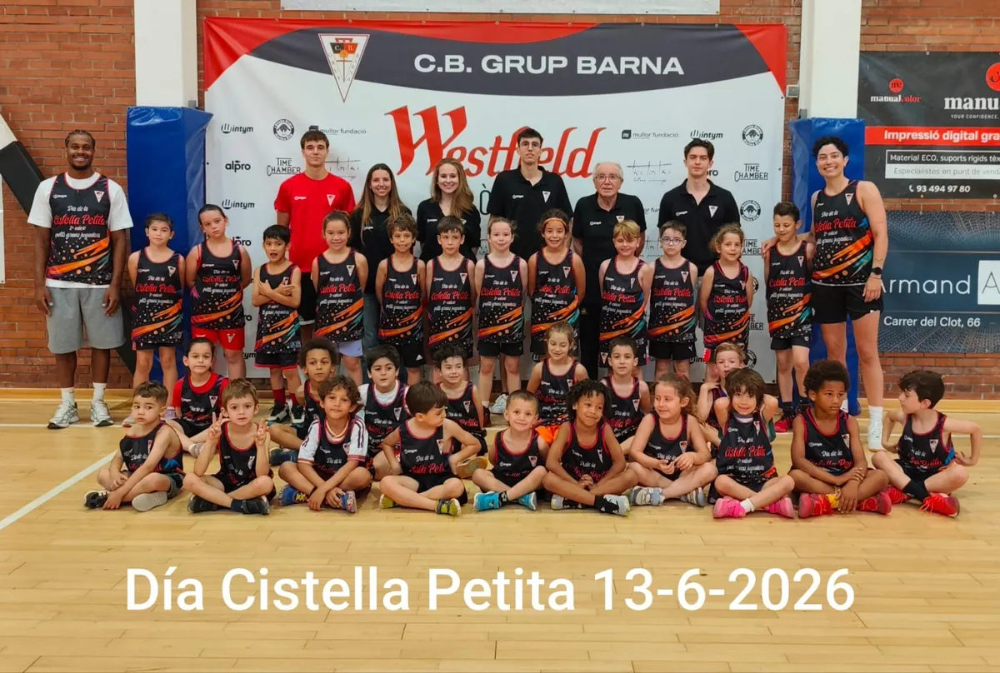
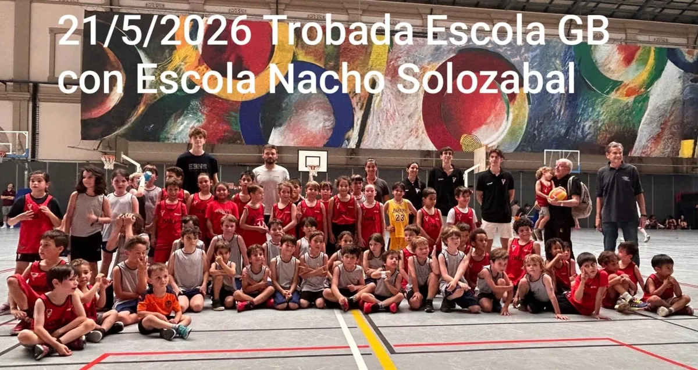
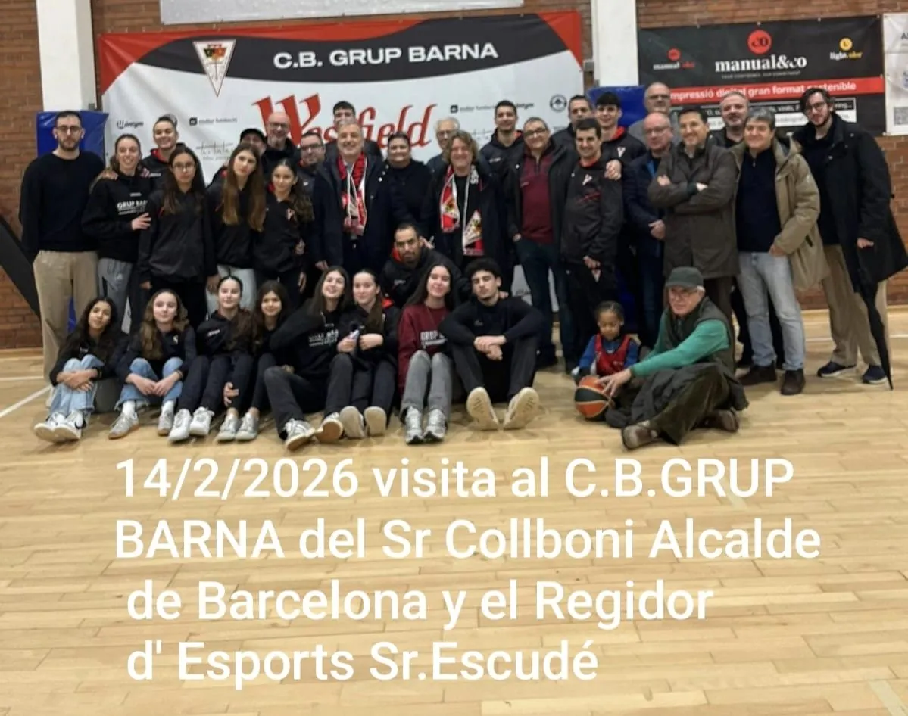
La mateixa pista on un nen de quatre anys aprèn a botar és on s’entrenen jugadors professionals fora de temporada.
La misma pista donde un niño de cuatro años aprende a botar es donde entrenan jugadores profesionales fuera de temporada.
A La Nau hi treballa Time Chamber, partner del club, amb Iandrey Panisa al capdavant. Per aquí hi han passat internacionals com Willy Hernangómez, campió d’Europa amb la selecció espanyola i jugador d’NBA i d’Eurolliga.
En La Nau trabaja Time Chamber, partner del club, con Iandrey Panisa al frente. Por aquí han pasado internacionales como Willy Hernangómez, campeón de Europa con la selección española y jugador de NBA y de Euroliga.
No és una anècdota per a Instagram. És el que fa que un nen de l’Escoleta creui la porta i vegi, amb els seus ulls, què vol dir dedicar-s’hi de veritat.
No es una anécdota para Instagram. Es lo que hace que un niño de la Escoleta cruce la puerta y vea, con sus propios ojos, qué significa dedicarse a esto de verdad.
L’Escoleta del CB Grup Barna és per a nens i nenes de 4 a 8 anys. No busquem els millors: busquem que hi vulguin tornar la setmana següent. La resta ja ho hem vist passar unes quantes vegades.
La Escoleta del CB Grup Barna es para niños y niñas de 4 a 8 años. No buscamos a los mejores: buscamos que quieran volver la semana siguiente. Lo demás ya lo hemos visto pasar unas cuantas veces.
L'Escoleta és l'escola de bàsquet del CB Grup Barna per a nens i nenes de 4 a 8 anys, al barri del Clot, Districte de Sant Martí de Barcelona. Funciona amb equips mixtos i tres grups per edat.
L'Escoleta la dirigeix Julio Torralba. Es pot contactar amb ell per telèfon o WhatsApp al 646 205 526.
Des dels 4 anys. L'Escoleta acull nens i nenes de 4 a 8 anys. A partir dels 8 i a mida que estan preparats, passen als equips federats del club (premini, mini i la resta de categories).
Sí. El primer entrenament és de prova i sense compromís. Cal escriure o trucar a Julio Torralba al 646 205 526 per reservar dia.
Al barri del Clot, al Districte de Sant Martí de Barcelona. La Nau del Clot és el punt esportiu principal del club.